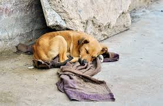
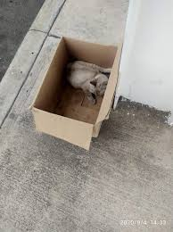

🐾 Huellitas Sin Hogar
¿Viste un animal abandonado? Regístralo aquí.
Esta página busca crear conciencia sobre la adopción de mascotas sin hogar.

Perro extraviado en Enrrique Segoviano.
Gato busca hogar, hablar al Whatsapp para mas info.
Perro encontrado en el cerro Pitu-Fina.

Gato sin casa cerca del Unimarc.